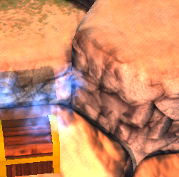
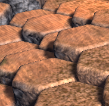
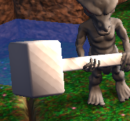

For awhile, I’ve noticed that when I enable shadows on my scene’s directional lights, I get banding and moire patterns on many surfaces:



It occurs even on flat, non-normal-mapped surfaces (such as the Siegebreaker’s hammer in the third pic).
The banding goes away if I disable shadows, so I’m sure that there is some tweaking I can do. Sadly, I don’t really understand the shadow process, so I’m not sure exactly which parameters to tweak or what values to shoot for. Changing things at random doesn’t really seem to get me anywhere, and the documentation isn’t really very descriptive about exactly what changes I can expect from tweaking which parameters. I’m guessing I need to modify Bias and/or Focus parameters. Can anyone point me in the right direction?